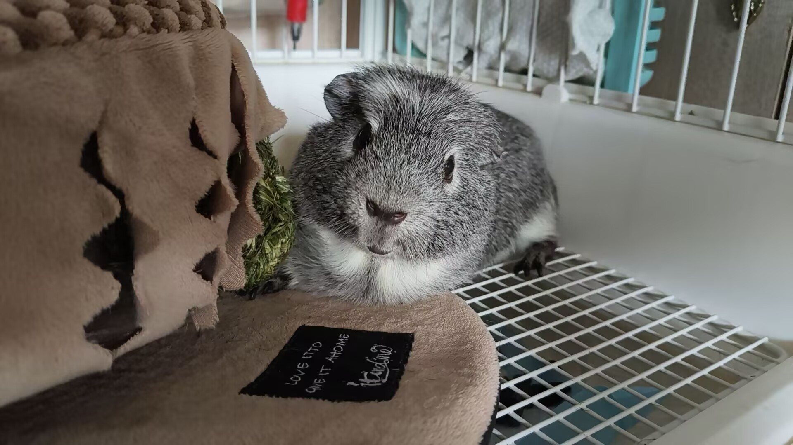

照片
使用默认图 ↺

↑ 点击或拖入，换一张照片
框选宠物
清除选框
小波.jpg
JPG / PNG / WebP · 最大 20 MB
✦ 自动抠出宠物
照片在本地处理 · 首次抠图需下载模型
修边
撤销
擦除
恢复
画笔
20
淡色是原图参考，拖动修边；恢复可找回误删部位。
尺寸与描边
画布尺寸
px
50 × 50
100 × 100
250 × 250
500 × 500
添加描边
自定义
描边粗细
4 px
细一点
粗一点
预览
静态 GIF
✿
抠图后预览
▧ 棋盘格代表透明区域
250 × 250 px
↓ 下载透明 GIF
透明底 · 单帧 GIF